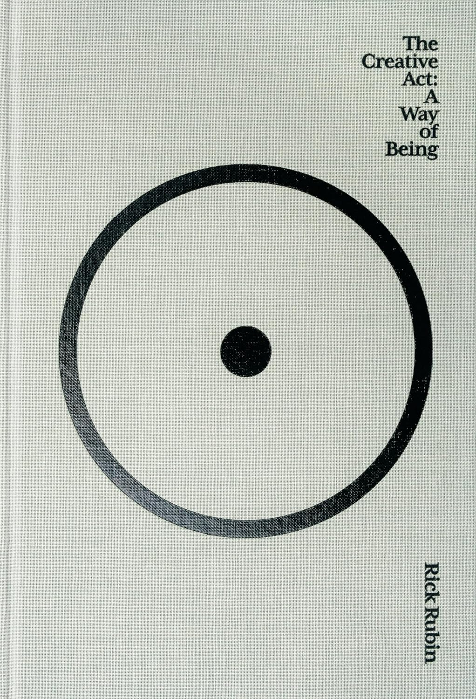

🌐 生活之道，创造之道
这篇文章从其英文版本翻译而来。若存在分歧，以原文为准。
书评：《创意行为：存在即答案》
本文章是 IndieWeb 书会十月专场的一部分。查看此页面以了解十月主持信息。
但凡伟大的行动，但凡伟大的思想，都有一个不起眼的开端。伟大的作品往往诞生在一条街的街角，或者一家餐馆的小门厅。
—— 阿尔贝·加缪，《西西弗神话》
你是艺术家吗？
你想成为艺术家吗？
对于一些人来说，创作艺术似乎是一件不可能的任务。通常认为，成为一名艺术家需要天赋。因此，建议他们去创作艺术，他们是不会欣然接受的。他们就是没什么能在画布上表达的，不知道创作什么，也不知道怎么创作。
喔，你或许已经知道一些艺术的秘密。当然，对于类似艺术这样的创意任务，天赋是必要的。然而，这不意味着所有试图一窥这般迷人世界的普通人都会头撞南墙。天赋是一个令人嫉妒的品质，可它并非唯一的入场标准。没人会被褫夺进入艺术殿堂的权利。
当我们讨论艺术天赋时，我们讨论的是技术。但掌握这种技术与否不重要。事实是，相信自己缺少艺术细胞的人，往往缺少对周遭生活细节的基本感知。换言之，他们缺乏对细节的关注，而正是细节创造奇景。
里克·鲁宾，一位著名音乐制作人，在 2007 年一夜豪夺五项格莱美奖。他在自己的那本著名的著作《创意行为：存在即答案》中，用 80 个章节详细讲述了他创造艺术的方法论，几乎涵盖了艺术作品从发端起的每一个方面。

对我来说，这本书没讲什么新鲜东西 （自夸） ，但它对于那些想要逃离平淡无奇的生活的人来说，却是一个指向艺术之堂的意义重大的导引。在我看来，你与艺术之间最深的鸿沟，是一种你内在的自动运作机制，而这本书正是致力于阐明这种机制。更确切地说：海德格尔的“常人”（das Man）与艺术家之间最根本的区别在于，滑入“常人”之境的人们会忽略身边细微的奇迹，而艺术家则会睁大好奇的双眼，欣赏每一个独特之处，最重要的是，这种观察是由某种内在的、自动涌现的冲动所驱动的。
要内化这种机制或能力，你需要锻炼心智。通过锻炼，一些潜意识的东西能不知不觉地渗入你的心智。对于那些一生大多数时间都沉浸在鲁钝海洋的人来说，还有很长的路要走。但重新聚焦生活本身永远不晚，生活是艺术的源泉。
本书有非常多的章节。在当下，在这个被短视频和八卦推文统治的世界，这么多章节可能会吓着你。但相反的是，这本书绝对是你无聊消遣杀时间的完美替代品。每一章都很短，以简单而美丽的散句写成。这是一本你拿起来，随手一翻就能阅读、感受的书。完美适合不耐烦的人们。
另一位博主提到了 AlphaGo 和李世乭，这是在“初学者心态”一章中的一个举例。我去观看了纪录片《AlphaGo》。当震惊世界的第 37 手出现在李面前时，他面露异色。
一开始，他微笑着，微笑里夹杂些许嘲讽与迷惑，但很快，笑容凝固消失，变成无声的震惊，以及——如果我能这么说的话——忧心和紧张。
每一次我重温这一幕，我都没有办法摆脱此种五味杂陈的心情。当我们把人工智能推向我们认知能力的边界，当我们深入黑暗的宇宙，我们可能遭遇更多不属于我们的双手的造物。当那些犹未到来的时刻降临，我坚信在李世乭心中翻涌的浪会重现在我们每个人心中。在那些前所未有的存在面前，我们都是初心者。但许多时候，正是乱拳打死老师傅。所以，如果你被我的文章说服，准备阅读这本书，重获对这个世界的敏感，请牢记，保持谦虚，保持天真，尔后天马御空而行，引君登临大雅之堂。